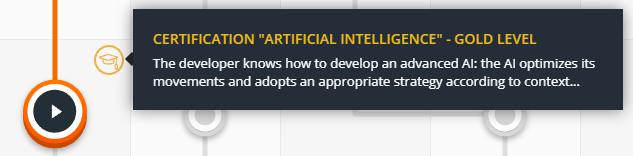
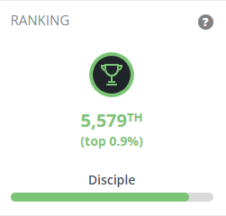
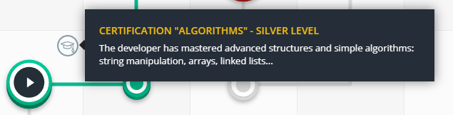
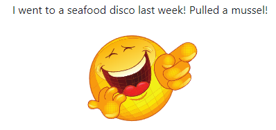

Digital Playground
Andrew van der Westhuizen
Hey there, fellow tech enthusiast! I'm excited to welcome you to my digital domain, where I spend a lot of my time exploring new projects and passions. This site serves as the perfect hub for my online presence, where I can showcase my personal works and connect with other like-minded individuals. I'm confident that you'll find my latest creations and endeavors to be both fascinating and inspiring. So, come on in and take a look around – I can't wait to share my digital world with you!
What will you find?
Codingame - Play with Programming


May, 2023
As an online platform that offers a variety of coding challenges and puzzles, Codingame
is the perfect place to improve your programming abilities and show off your achievements.
There, you'll be able to see my progress in various coding challenges and games, including my high scores and achievements. You can even compete against me in multiplayer games or send me a challenge request to test your skills against mine!
Whether you're a fellow coder looking to connect and collaborate or a potential employer looking to see my coding abilities, my Codingame profile! is the perfect place to start. So don't hesitate - head to my profile and see what I can do!
Progressive web jokes
 Hey there! Are you looking for a fun and innovative way to learn about progressive web apps? Look no further than this excellent joke progressive web app! With a hilarious punchline that will leave you in stitches, this app is the perfect way to explore the world of PWAs while having a good laugh. And the best part? You can access it from any device without pesky Java applets or Flash applications. So why not try it and see what all the fuss is about? Happy learning (and laughing)!
Ad-free Spyfall
I recently built a Spyfall Progressive Web App (PWA) that has been a lifesaver for me and my friends. We are tired of using online versions riddled with ads and ruining our gaming experience. I made the original version using WebSockets to learn go and Websockets, but I plan on improving it even further. The future version will remove the dependency of needing to be online. However, one thing that surprised me was that PWAs require HTTPS; within that context, you have to make WSS connections. Luckily, since I self-host the app, I now own a cert for my home domain. Overall, I'm excited to continue developing this PWA and providing a seamless and ad-free gaming experience for all.
Advent of Code - Save Christmas
I sometimes participate in the Advent of Code, a coding challenge, every year in December. The challenge consists of a series of programming problems that increase in complexity as the days progress. As an avid coder, I was excited to participate and test my skills against others in the community.
The Advent of Code is a fantastic experience! Each day brings a new challenge that pushes me to think creatively and outside the box. While some problems were more accessible than others, I learned something new with each one I solved. And the feeling of finally cracking a particularly tough problem was gratifying!
As I progress through the challenge, I document my journey and solutions in a write-up. I've included explanations of the problems, my thought process for solving them, and any obstacles I encountered. I hope that my write-up will be helpful to others who are considering participating in the Advent of Code or who want to learn more about programming.
Bitburner - A cyberpunk-themed incremental RPG!
 As a programming enthusiast, I love working on console applications and exploring new ways to automate
tasks. I'm excited to share my Bitburner scripts repository with you.
As a programming enthusiast, I love working on console applications and exploring new ways to automate
tasks. I'm excited to share my Bitburner scripts repository with you.
My repository is a collection of evolving scripts that automate various tasks within Bitburner, a popular text-based hacking simulator. I design these scripts to be modular and easy to customize, so you can use them to optimize your gameplay and increase your earnings.
Some of the scripts in my repository automate hacking servers and stealing money, while others focus on upgrading your servers and optimizing your network. I'm constantly adding and refining new scripts, so there's always something new to try.
Explore my Bitburner scripts, and feel free to download, modify, and share them with others. I'm always open to feedback and suggestions for improvements.
While my Bitburner scripts repository may not be a formal project, it's a testament to my passion for programming and commitment to exploring new ideas. I hope these scripts are helpful and inspiring in your programming adventures.
More about me
While I don't prioritize social media, I have a professional LinkedIn profile. I use GitHub to backup my work across devices, but I've since found that Syncthing works better. When not working on tech projects, I spend my free time gaming with friends on Steam or playing board games from my collection.